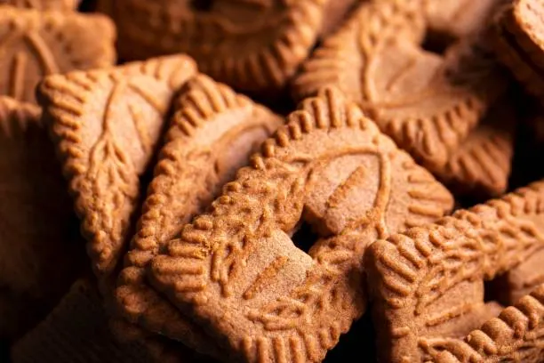

Speculoos

Speculoos is a thin, crunchy, caramelized spiced biscuit originating from Belgium, where it is distinct from the more heavily spiced Dutch speculaas.
The name derives from the Latin word speculum ("mirror"), referring to the traditional wooden molds used to stamp intricate designs,
such as figures of Saint Nicholas, onto the cookies.
Ingredients:
- Light brown candi sugar or deeply toasted sugar
- Unsalted butter (soft but cool)
- Baking soda
- Cinnamon
- Kinako
- Freshly grated nutmeg
- Table salt
- Ground cloves
- Ground cardamom
- Ground anise
- Tap water
- All-purpose flour
Recipe:
-
Adjust oven rack to lower-middle position, and preheat to 350°F (180°C).
In the bowl of a stand mixer fitted with a paddle attachment, combine candi or toasted sugar with butter,
baking soda, cinnamon, kinako, nutmeg, salt, cloves, cardamom, and anise.
Cream on medium speed until fluffy, soft, and pale, about 10 minutes,
pausing to scrape the bowl and paddle as needed if the sugar seems dense and compacted at the bottom of the bowl.
-
While creaming on medium speed, slowly splash in the water a little at a time.
Once it disappears into the fluffy butter/sugar mix, reduce speed to low and add the flour all at once.
Continue mixing until the dough begins to gather around the paddle.
-
Turn the dough onto a clean surface, and knead gently to form a ball. Pat into a rectangular shape, then dust with flour, above and below.
Roll to a thickness of 3/16-inch, using a ruler for guidance.
Slide an offset spatula beneath the dough to loosen, and brush away the excess flour.
-
With a fluted pastry wheel, cut the dough into 3/4-inch strips, then cut crossways to form 2-inch rectangles.
With the offset spatula, transfer the cutouts and scraps to a parchment-lined half sheet pan,
leaving an inch between each piece to account for spread.
-
Bake until cookies are golden brown, about 16 minutes, rotating the pan halfway through if needed to ensure even browning.
Cool to room temperature directly on the baking sheet; the cookies will not crisp until fully cool.
Enjoy with coffee, and store leftovers in an airtight container up to 1 month at room temperature;
the scraps can be ground to use for crumbs and frozen in an airtight container for up to 3 months.
Home